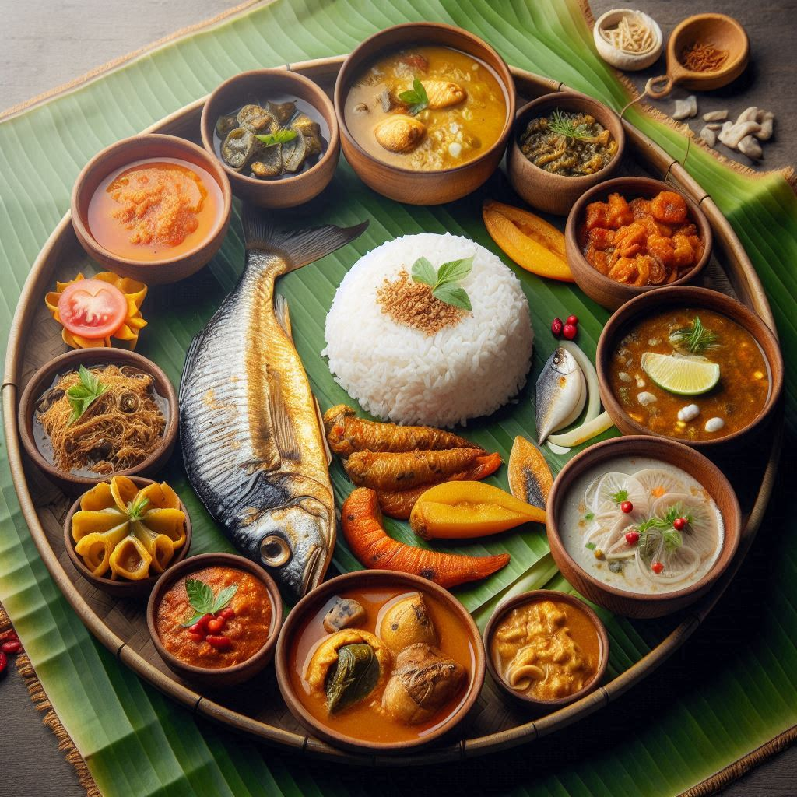
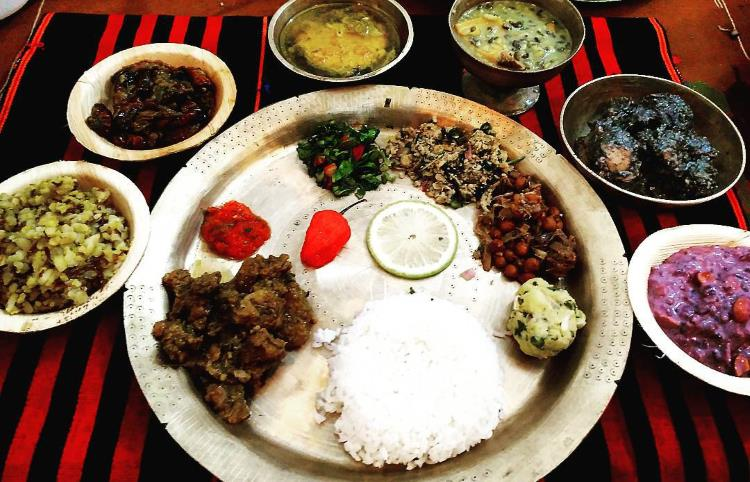

Assamese cuisine is a delightful blend of flavors, ingredients, and techniques that reflect the state's rich
cultural diversity and close connection to nature. The food of Assam is primarily simple, healthy, and
flavorful, relying heavily on locally available ingredients like rice, fish, meat, vegetables, and bamboo
shoots. Assamese dishes are known for their minimal use of spices, focusing instead on preserving the
natural flavors of the ingredients.
1. Staple Foods:
-
Rice: Rice is the staple food of Assam and is consumed in various forms. From plain
boiled rice to sticky rice (Bora saul) and flattened rice (Chira), it forms the
base of most meals. Assam is known for its different varieties of rice, including the fragrant
Joha rice and red rice, which is rich in nutrients.
-
Fish: Given Assam’s proximity to the Brahmaputra River and its many tributaries, fish
plays a significant role in Assamese cuisine. Freshwater fish like Rohu, Catla,
and Bohu are popular and prepared in various ways, such as curries, fries, or smoked.
2. Popular Dishes:
-
Khar: This is a signature Assamese dish made with raw papaya, pulses, and a key
ingredient called khar, which is an alkaline extract made from sun-dried banana peels. The
dish has a mild, savory taste and is usually served with rice. Khar is unique to Assamese
cuisine and is often consumed as the first course of a meal.
-
Masor Tenga: A tangy and light fish curry, Masor Tenga is one of the most famous
dishes in Assam. It is made using a souring agent, typically tomatoes, lemon, or Thekera
(dried mangosteen), and is flavored with mustard, fenugreek, and minimal spices. The dish is
known for its refreshing, sour taste and is usually served during the hot summer months.
-
Aloo Pitika: A simple yet delicious mashed potato dish, Aloo Pitika is prepared
by mixing boiled potatoes with mustard oil, green chilies, onions, and coriander. It is a staple
side dish and is often served with rice.
-
Duck Meat Curry: Duck meat, known as Haah, is a delicacy in Assamese cuisine,
especially during festive occasions. The meat is usually cooked with ash gourd (lauki) or
whole spices like cinnamon and bay leaves, creating a rich and flavorful curry. The addition of
mustard oil gives the dish its distinct Assamese flavor.
-
Poitabhat: During the summer, a dish called Poitabhat (fermented rice) is
popular. Leftover rice is soaked in water and fermented overnight, and the dish is often
consumed with mustard oil, onions, green chilies, and pickles. It is a cooling dish that helps
combat the heat and humidity of the region.
3. Tribal Dishes:
Assam is home to several indigenous tribes, each with its own food culture. The dishes of Assam’s tribal
communities are unique, making extensive use of bamboo shoots, fermented foods, and wild herbs.
-
Bamboo Shoot Dishes: Bamboo shoots are a common ingredient in many tribal dishes. They
are often fermented and used in curries or stir-fries. Bamboo shoot pickle is also
popular for its tangy flavor.
-
Pork with Bamboo Shoot: Pork is a favorite meat among many tribal communities, and
Pork with Bamboo Shoot is a beloved dish. The pork is slow-cooked with bamboo shoots,
minimal spices, and often flavored with bhoot jolokia (ghost pepper), giving it a unique
taste.
-
Fish Tenga: While fish curry is common across Assam, tribal variations of fish curry use
locally sourced herbs and wild greens, giving the dish a distinct earthy flavor.
4. Vegetarian Dishes:
Assamese cuisine also features several vegetarian dishes that are simple yet packed with flavor.
-
Xaak Bhaji: Assam is known for its wide variety of green leafy vegetables, known as
xaak. These greens are lightly stir-fried with mustard oil and served with rice. Popular
xaak varieties include Laai Xaak, Maanimuni Xaak (Indian pennywort), and Dhekia
Xaak (fiddlehead fern).
-
Kosu Xaak: Made from taro leaves, Kosu Xaak is a unique Assamese dish where the
leaves are cooked with tamarind or lemon to balance the natural acidity and served with rice.
-
Tenga Dali: A sour lentil dish, Tenga Dali is cooked with vegetables and tamarind
or elephant apple for tanginess. It is a simple yet delicious vegetarian dish often eaten during
the summer.


5. Pitha:
Pitha is a traditional Assamese snack or dessert, made primarily from rice flour. Pithas are
especially popular during the
Bihu festival.
-
Til Pitha: A cylindrical rice cake stuffed with black sesame seeds and jaggery.
It is crunchy on the outside and sweet on the inside.
-
Ghila Pitha: A fried rice cake made from rice flour and jaggery. It is soft,
chewy, and slightly sweet.
-
Sunga Pitha: Sticky rice cooked inside a bamboo tube, often flavored with
coconut or jaggery.
6. Chutneys and Condiments:
Assamese meals are incomplete without a variety of chutneys and condiments. These add a burst of flavor
and spice to the meal.
-
Bhoot Jolokia Chutney: Made from one of the spiciest chilies in the world, Bhoot
Jolokia (ghost pepper), this chutney is fiery and not for the faint-hearted.
-
Thekera Pickle: A tangy pickle made from Thekera, a sour fruit that is also used in
fish curries and dals.
7. Sweets:
Assamese sweets are mostly made from rice, jaggery, and coconut, and are simple yet delicious.
-
Narikol Ladoo: Coconut balls made from grated coconut and jaggery, often prepared during
festivals like Bihu.
-
Payas: A rice pudding made from milk, rice, and jaggery or sugar, similar to kheer in
other parts of India.
8. Tea:
Assam is world-famous for its Assam tea, which is a black tea known for its strong flavor and deep
color. The state’s tea gardens are spread across the Brahmaputra Valley, and tea is a significant
part of Assamese culture. Locals prefer drinking tea with milk and sugar, but black tea and lemon
tea are also popular.
8. Tea:
Assamese cuisine is a rich reflection of the state’s diverse ethnic groups, its fertile land, and its
connection to nature. With its reliance on fresh, local ingredients and minimal use of spices, Assamese food
offers a unique and flavorful experience that showcases the region’s simplicity and creativity. Whether it's
the tangy Masor Tenga, the hearty Duck Meat Curry, or the festive Til Pitha, Assamese cuisine
offers a culinary journey through one of India’s most culturally vibrant states.